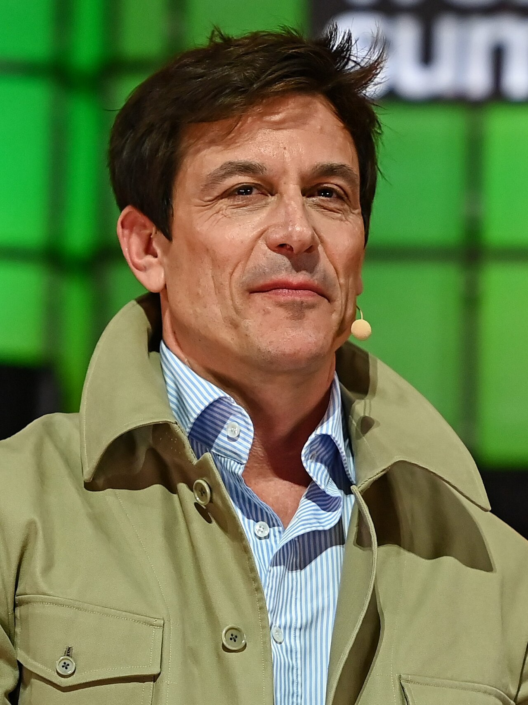
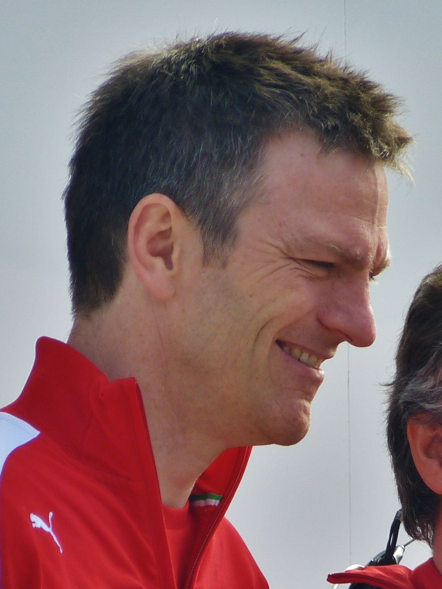

Mercedes' F1 history began in 1954–1955, when Juan Manuel Fangio won two titles before the team withdrew following the Le Mans disaster. It returned as an engine supplier in the 1990s, notably powering McLaren to titles with Häkkinen and Hamilton, before buying the Brawn GP team in 2010 to become a full works outfit again — first with a mostly unsuccessful Schumacher comeback. Everything changed in 2014 when new hybrid turbo regulations arrived: Mercedes built the era's dominant power unit and, with Hamilton and later Rosberg and Bottas, won eight straight Constructors' Championships (2014–2021) and six Drivers' titles for Hamilton. Since the 2022 rule changes, Red Bull and Ferrari have taken over at the front, and Mercedes — now led by George Russell and rookie Kimi Antonelli after Hamilton's 2025 move to Ferrari — has been working to rebuild its competitive edge.

Toto Wolff, Team Chief

James Allison, Technical Chief